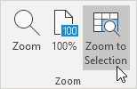

Dalam kebanyakan kasus, Anda dapat menggunakan simbol minus dan plus di bilah status untuk memperbesar dokumen dengan cepat . Gunakan tombol pada tab Lihat untuk memperbesar persentase tertentu dan memperbesar pilihan.
1. Untuk memperbesar dokumen dengan cepat, gunakan simbol minus dan plus di bilah status.

Untuk memperbesar ke persentase tertentu, jalankan langkah-langkah berikut.
2. Pada tab Lihat, di grup Zoom, klik Zoom.
3. Masukkan nomor (antara 10 dan 400) dan klik OK.

Untuk memperbesar pilihan, jalankan langkah-langkah berikut.
4. Pertama, pilih rentang sel.
5. Pada tab View, di grup Zoom, klik Zoom to Selection.
